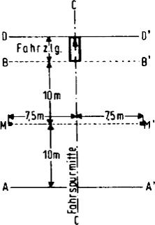
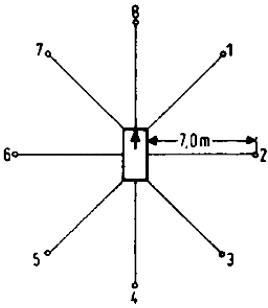

- 1
Allgemeines
Lärmarme Kraftfahrzeuge sind Fahrzeuge, bei denen alle lärmrelevanten Einzelquellen dem Stand moderner Lärmminderungstechnik entsprechen.
- 2
Lastkraftwagen
- 2.1
Geräuschgrenzwerte
Der Stand moderner Lärmminderungstechnik ist für Lastkraftwagen mit einem zulässigen Gesamtgewicht von mehr als 2,8 t dann gegeben, wenn folgende nach Leistungsklassen unterschiedliche Grenzwerte eingehalten oder unterschritten werden:
Tabelle 1
| | Motorleistung |
|---|
| | | |
|---|
| weniger als 75 kW | von 75 kW
bis weniger als 150 kW | 150 kW oder mehr |
|---|
| Fahrgeräusch | 77 dB(A) | 78 dB(A) | 80 dB(A) |
| Motorbremsgeräusch1) | 77 dB(A) | 78 dB(A) | 80 dB(A) |
| Druckluftgeräusch1) | 72 dB(A) | 72 dB(A) | 72 dB(A) |
| Rundumgeräusch2) | 77 dB(A) | 78 dB(A) | 80 dB(A) |
- Sofern entsprechende Bremseinrichtungen vorhanden sind.
- Enfällt bei elektrischem Antrieb.
Während einer Einführungszeit bis zum 31. Dezember 1987 gelten auch Fahrzeuge als lärmarm, deren Geräuschemissionen die Werte der Tabelle 1 um bis zu 2 dB(A) überschreiten.
Lastkraftwagen mit lärmrelevanten Zusatzaggregaten wie zum Beispiel Pumpen, Standheizung, Klimaanlagen, Mülltrommeln gelten nur dann als lärmarm, wenn durch eine Zusatzprüfung festgestellt wird, dass auch diese Lärmquellen dem Stand moderner Lärmminderungstechnik entsprechen. Dies gilt in der Regel als erfüllt, wenn das Geräusch der Zusatzaggregate in deren lautestem Betriebszustand nicht lauter als 65 dB(A) in 7 m Abstand ist und keinen ton- oder impulshaltigen Geräuschcharakter aufweist. Für Zusatzaggregate kann der Stand moderner Lärmminderungstechnik durch Einzelrichtlinien festgelegt werden.
- 2.2
Geräuschmessverfahren
- 2.2.1
Fahrgeräusch
Das Fahrgeräusch wird auf der Messstrecke nach Abbildung 1 bei beschleunigter Vorbeifahrt in 7,5 m seitlicher Entfernung von der Fahrspurmitte nach der in § 49 Absatz 2 Nummer 1 genannten Richtlinie mit folgender Abweichung ermittelt:
Ein nach der in § 49 Absatz 2 Nummer 1 genannten Richtlinie notwendiges Hochschalten der Gänge aus X/2 ist in dem Gang zu beenden, in dem die höchstzulässige Motordrehzahl (zum Beispiel Abregeldrehzahl) erstmals bei Überfahren der Linie BB´ nicht mehr erreicht wird.
- 2.2.2
Motorbremsgeräusch
Die Messung wird auf der Messstrecke nach Abbildung 1 beidseitig am beladenen Fahrzeug vorgenommen. Dabei ist diejenige Getriebestufe einzulegen, in der die Geschwindigkeit des Fahrzeugs bei Nennleistungsdrehzahl des Motors am nächsten bei 40 km/h liegt. Aus der der Nennleistungsdrehzahl entsprechenden Geschwindigkeit heraus wird die Motorbremse bei Überqueren der Linie AA´ voll eingeschaltet und der höchste A-Schallpegel an den Messorten während der Vorbeifahrt zwischen den Linien AA´ und BB´ gemessen.
Abbildung 1
Markierung der Messstrecke für das Messen des Fahrgeräuschs

- 2.2.3
Rundumgeräusch
Die Messung erfolgt am stehenden Fahrzeug gemäß Abbildung 2 an acht Messpunkten in 7 m Entfernung vom Fahrzeugumriss und in 1,2 m Höhe.
Vor der Messung ist der Motor auf normale Betriebstemperatur zu bringen.
Die Messung soll bei folgender Betriebsbedingung ausgeführt werden:
Der Gasfußhebel ist stoßweise so weit zu betätigen, dass die Abregeldrehzahl jeweils kurz erreicht wird (Beschleunigungsstoß).
Für jeden der acht Messpunkte wird der höchste hierbei auftretende A-Schallpegel ermittelt.
Lässt sich aus motortechnischen Gründen keine bestimmte Abregeldrehzahl erreichen, ist die Messung wie folgt durchzuführen.
Die Drehzahl wird zunächst auf 3/4 der Nennleistungsdrehzahl konstant gehalten und dann so schnell wie möglich auf Leerlaufdrehzahl abgesenkt.
Für jeden der acht Messpunkte wird der höchste A-Schallpegel ermittelt, der während einer kurzen Einhaltung der oben angegebenen konstanten Drehzahl und der Zeit für den Drehzahlabfall auftritt. Bei Anwendung dieses Messverfahrens sind die Grenzwerte für das Rundumgeräusch gegenüber den Werten aus der Tabelle 1 um 5 dB(A) niedriger anzusetzen.
Abbildung 2
Lage der Messpunkte für das Messen des Rundumgeräuschs

- 2.2.4
Druckluftgeräusche
Die Messung erfolgt am stehenden Fahrzeug in den Messpunkten 2 und 6 gemäß Abbildung 2.
Ermittelt werden die höchsten A-Schallpegel des Druckregler-Abblasgeräuschs und des Entlüftungsgeräuschs nach Betätigen der Betriebs- und Feststellbremse.
Das Druckregler-Abblasgeräusch wird bei Leerlauf des Motors ermittelt.
Das Entlüftungsgeräusch wird beim Betätigen der Betriebs- und Feststellbremse ermittelt, wobei vor jeder Messung die Druckluftanlage auf den höchsten Betriebsdruck zu bringen ist und der Motor abgestellt wird.
- 2.2.5
Auswertung der Ergebnisse
Die Messungen werden für alle Messpunkte zweimal ausgeführt.
Zur Berücksichtigung der Ungenauigkeiten der Messgeräte gilt der am Gerät abgelesene, um 1 dB(A) verringerte Wert als Messergebnis. Die Messergebnisse werden als gültig angesehen, wenn der Unterschied der am gleichen Messpunkt vorgenommenen Messungen 2 dB(A) nicht übersteigt. Als Prüfergebnis gilt das höchste Messergebnis aller unter Nummer 2.2.1 bis 2.2.4 jeweils beschriebenen Messpunkte. Übersteigt dieser Wert den zulässigen Grenzwert um 1 dB(A), so sind für den entsprechenden Messpunkt zwei weitere Messungen durchzuführen. Hierbei müssen drei der vier Messergebnisse innerhalb der vorgeschriebenen Grenzwerte liegen.
- 2.2.6
Sonstiges
Hinsichtlich der Messgeräte und aller akustischen Randbedingungen bei der Messung gelten die Vorschriften der in § 49 Absatz 2 Nummer 1 genannten Richtlinie.